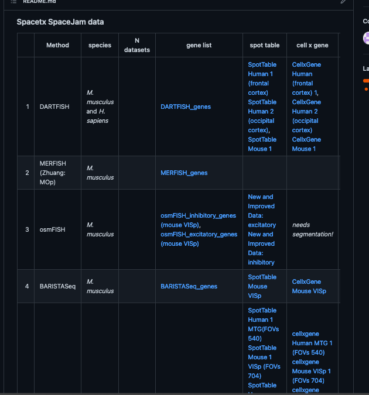

Data and Analysis¶
Data¶
Method |
Info |
Data Links |
|---|---|---|
BARISTASeq |
| Method | Info | Data Links |
|---|---|---|
| BARISTASeq | BARISTASeq_Readme.txt | cell_by_gene.csv mapped_cell_table.csv spot_table.csv |
| multiround smFISH | smFISH_Readme.txt | cell_by_gene.csv mapped_cell_table.csv spot_table.csv |
| ExSeq | ExSeq_Readme.txt | cell_by_gene.csv mapped_cell_table.csv spot_table.csv |
| MERFISH (Allen Institute prototype) | MERFISH_Allen_Prototype_Readme.txt | cell_by_gene.csv mapped_cell_table.csv spot_table.csv |
| ISS | ISS_Readme.txt | cell_by_gene.csv mapped_cell_table.csv spot_table.csv |
Cell Type Identification in single cell RNASeq data¶
The SpaceTx consortium chose the mouse visual cortex as the substrate for spatial transcriptomics comparisons. This was Consensus clustering
Computational strategies:
(Eeshit DV) SIMLR (Single-cell Interpretation via Multi-kernel LeaRning) learns an appropriate distance metric for clustering and accounts for drop-outs. Can also be run as a consensus clustering strategy. (https://github.com/BatzoglouLabSU/SIMLR).
(Peter K) PAGODA (Pathway And Gene set Over-Dispersion Analysis) resolves multiple aspects of gene expression heterogeneity by testing gene sets for coordinated variability among measured cells (http://hms-dbmi.github.io/scde/pagoda.html).
(Zizhen Y) scrattch.hicat (Hierarchical, Iterative Clustering for Analysis of Transcriptomics) iteratively repeats a multi-step approach on each cluster using different variable genes until no new clusters can be defined, then bootstraps the iterative process (https://github.com/AllenInstitute/scrattch.hicat).
(Trygve B) - Precursor pipeline used for human MTG
(Kenneth H) proMMT (Probabilistic Mixture Modeling for Transcriptomics) uses an EM algorithm to iteratively define clusters using the Bayesian information criterion and identify a sparse set of genes varying across clusters (Harris et al 2018; “Classes and continua…”; PLoS Biol.).
Most methods were run multiple times with different parameter settings.
Cluster consensus:
(Trygve B) - Cluster comparisons using Adjusted Rand, VI, etc. and showing which clusters subclasses /types are split more by various methods
(Brian A) - Consensus mouse and human clusters were defined using clusterExperiment R library, which clusters the co-occurrence matrix (https://github.com/epurdom/clusterExperiment).
Mouse clusters were defined on VISp + ALM data set and 68 ALM-specific clusters were removed from the consensus clustering, for 191 total clusters
Marker Gene Selection¶
Four different computational strategies:
(Jeremy M) - Greedy algorithm generally identifies combinatorial genes. This method was used for completing smaller panels and validating all panels.
(Kenneth H) Probability model aimed to maximize the average number of levels of a clustering tree correctly classified
(Brian A) - NS-Forest: Random forest strategy aimed at identifying the most informative markers of specific cell types
(Eeshit DV) Random forest strategy which ranks genes based on the overall importance towards classification
(Eeshit DV) These methods were merged together into a ranked list and some gene panels were selected from this list.
Experimental Methods¶
{kind=link}
SpaceTx Consortium data includes the following experimental methods:
multiround smFISH: SSAM paper
In-situ sequencing: hybISS paper
ExSeq: ExSeq paper
MERFISH: This unpublished MERFISH data is from a prototype pipeline with max projected z-stacks prior to decoding.
BaristaSeq: BaristaSeq paper
In addition to these image based spatial transcriptomics methods, we also analyzed data from a sequencing-based method:
Visium: Visium is a (commercial) sequencing-based technique, where spatially barcoded oligonucleotides with a poly-T sequence are used to capture mRNA from fresh frozen tissue samples. In the Visium platform, capture locations (hereafter; spots), containing the barcoded oligonucleotides, are arranged according by “orange-crate packing” forming an equidistant hexagonal grid. Spots have a center to center distance of 100μm and a diameter of 55μm. A square region with sides of 6.5mm, containing 4992 spots, constitute the capture area onto which tissue samples are attached. Brightfield images are taken of the tissue samples after staining with hematoxylin and eosin (HE-images). Count data, obtained after sequencing, can be computationally aligned to the HE-images and related to morphological features.
Cell Segmentation¶
Cell segmentation associates mRNA spot locations with individual cells, creating transcriptomic profiles that make up the cell-by-gene table.
SpaceTx Cell Segmentation Pipeline
Feature-based nucleus segmentation based on DAPI is applied to stitched 2D volumes and consists of two steps: (i) foreground segmentation and (ii) its consecutive splitting into separate instances (nuclei). For the first task, simple thresholding, either by employing one of the many available thresholding methods or by fine-tuning the cutoff intensity value, was sufficient to segment the foreground in all the available data sets. Splitting of the foreground into separate instances is performed per connected component, which allows efficient parallelizable implementation of our method. Based on the observation that most nuclei have rather regular elliptical shape, we developed an approach inspired by the work of Bilgin et al. [1] than employs elliptic features to extract two types of information: (i) curvature maps whose local minima correspond to locations of separation lines between touching nuclei and (ii) markers cognitively describing shapes of the nuclei and defined as the regions with positive Gaussian curvature and negative mean curvature. Calculation of the curvature maps and the markers is guided by a scale parameter, one for each, the value of which is chosen experimentally based on the average nucleus size. The markers are consecutively turned into super-pixels by performing skeletonization on the foreground with subtracted markers region. Calculated super-pixels are progressively merged based on the inter-pixel similarity score for obtaining the final segmentation. The similarity between two neighbouring super-pixels is defined based on the average value of the curvature map in the region between the corresponding markers and is recalculated after each merging iteration. This process stops after the maximum value of the inter-pixel similarity does not exceed the predefined threshold (whose value was kept fixed for all the test data sets). The described algorithm that worked equally well on the entire variety of SpaceTX data, including DAPI channels of the fluorescence microscopy data as well as 10x Visium histopathology images.
Augmented Cell Segmentation using Baysor. Using the nuclear segementation as a prior for cell location, Baysor assigned mRNA spots to cells probabilistically, including cell size and gene composition.
Data Formatting Standards and Computational Pipelines¶
Background
Many Spatial Transcriptomics methods are based on a common pattern of data acquisition: images are collected in multiple fluorescence channels after a round of readout chemistry, and this process is repeated until all fluorescent readouts have been imaged. Similarly, the compuational processing pipelines to turn raw images into transcriptional profiles of cells share many computational steps. In this context, the SpaceTx Consortium pursued two software projects:
SpaceTx-Format is a fully-specified format for image-based spatial transcriptomics raw data, including spatial structure of images in 3D, description of round-channel organization and a specification for the “codebook” relating fluorescence images to gene identity.
starfish is a Python package that provides processing modules that can be assembled into completel processing pipelines to extract mRNA locations for barcode methods (MERFISH, SEQFISH), sequencing-based readouts (ISS, FISSEQ) and non-barcoded readouts (osmFISH).
Both of these projects are housed in the starfish github repo and can be cited using the starfish article in Journal of Open Source Software.
Cell Type Mapping and Combined Results¶
Cell Type Mapping
This is the first time spatial transcriptomics data has been analyzed and compared across methods for cell type determination. We developed approaches to combine multiple cell type mapping methods and applied them to data sets from five experimental methods.
A primary output of segmentation in each of the image-based experimental methods is a table of putative cells which each have a count of the number of molecules per gene as well as a soma location. In this section we present results for MERFISH, but can do the same for other methods. Cells located outside of the primary visual cortex (VISp) based on expert annotation or that do not pass quality control filters are excluded from further analysis.
We next aimed to assign a cell type and associated confidence to each putative cell based on gene molecule counts. This was done using a combined analysis approach, where the strategies below were used to map cells to cell types from the taxonomy defined above, and the results of these strategies were then combined to produce a single combined cell type call with associated confidence score for each remaining cell.
Annotation of VISp area for mapping Cell locations were visualized in Napari https://napari.org and manually annotated to contain the largest possible area of primary visual cortex. Layers were manually annotated based on cell density and gene expression.
Cell Mapping strategies (including cell QC/filtering steps)
QC criteria
Baysor (Viktor Petukhov) Github repo, Nature Biotechnology (2021) or BioRxiv preprint
mFISHtools (Jeremy Miller) Github repo
Eeshit’s method [Eeshit]
Renee’s method: Mapping spatially-defined cells to canonical cell types from scRNA-seq using FR-Match
pciSeq Github repo
Yilin’s method [Yilin]
Combination of mapping results - negative weighting - geometric median
Visium Data Single Cell Mapping
Visium is often described as unbiased and transcriptome-wide, since it’s not based on a priori selection of genes to be examined and targets all poly-adenlated transcripts. However, the current Visium platform does not provide single cell resolution and, though dependent on tissue, the common estimate is that approximately 1-10 cells contribute to the observed gene expression at each spot. The “mini-bulk” property of spots means that spots rarely can be assigned to a single cell type, and more common is to characterize these w.r.t. cell type compositions (e.g., proportion of cell types present at each location). For such purposes, several methods where single cell/nuclei data is used as a guide reference have been proposed, with the shared objective of decomposing the joint expression profiles observed in a spot into contributions from the cell types defined in the single cell/nuclei data.
stereoscope and Tangram were used to deconvolve the spatial Visium data using non-spatial single cell data, a procedure we refer to as “mapping” of the latter onto the former. In short, once presented with the Visium data, both these approaches will provide a proportion estimate of each cell type within every spot, thus allowing the spatial distribution of each cell type to be charted. Although the final products are similar, the two methods differ substantially in design; stereoscope relying on a probabilistic framework where both data modalities are modelled with a negative binomial distribution, while Tangram cast the the task more as a optimization problem where a map between single cells and spatial locations.
For consistency, the cell type mapping analysis focuses on the small region that constitutes the VISp as shown in Figure 1; even though spatial gene expression data was generated from a larger part of the tissues (about half of a coronal mouse brain section fit onto the capture area). We aim to evaluate the mapping from each method, as well as comparing these two to each other. Nevertheless, establishing a ground truth for the proportion values is arguably even harder than for the cell type identities in the image-based methods, hence concurrence with well-known locations of cell types (e.g., Layer associated) will serve as the basis of our evaluation.

Figure 1 | A) zoom in on the regions of interests. Spots included in the analysis are marked on the tissue with black circles. The tissue edged to which distance is measured is indicated by a dashed red line. B) Pearson correlation values between cell type proportion estimates from stereoscope and Tangram. The star (*) on Meis2 indicates that this correlation did not have a significant p-value. C) Smoothed curves (loess smoothing) of the cell type proportions when plotted as a function of distance to the tissue edge (red in A).
By computing the correlation (Pearsons’s r) between proportion estimates for each cell type it’s possible to quantitatively assess how results from the two methods relate. A significant positive correlation between the proportion estimates could be observed for all cell types except Meis2, where the correlation was negative but also non-significant (p = 0.36), see Figure 1B. High correlation values were observed for several of the layer types as well as Macrophages and Astrocytes. Most of the cell types with poor correlation were - according to the proportion estimates - lowly abundant in the tissue, implying mapping of rare cell types likely are more challenging to map and the result associated with higher uncertainty.
Next, we were interested in how the different layer cell types were distributed along the axis orthogonal to the tissue edge, i.e., when travelling further into the tissue (blue arrow Figure 1A). We thus measured the shortest distance for every spot to the tissue edge and modelled the cell type proportion values as a function of this distance, loess (locally estimated scatterplot smoothing) curve smoothing was used to get a more continuous graph, and to better capture the general trends in the data, see Methods. The two methods by en large agreed; albeit not always unimodal, the cell type distributions had one dominant major mode - overlapping well across methods - and exhibited the expected right shift trend (layer types with higher numbers being more prevalent deeper into the cortex and vice versa), see Figure 1C. For some cell types, the distributions were multimodal indicating potential “mismapping”, still in the cases where both methods independently located these peaks at almost identical positions the explanation might be biological or experimental.
Data Visualization¶
Spatial Transcriptomics data presents unique challenges for visualization.
- Visualization of processed spatial transcriptomics data
- Processed Spatial Transcriptomics data typically includes:
Spot Tables: Spatial locations for all mRNA spots detected in the experiment.
Cell by Gene Tables: Cell locations and the total mRNA counts associated with each cell.
Overview Image: spatial context for high-resolution data. For example, SpaceTx Consortium data includes high resolution data of mouse VISp and the overview image includes a DAPI image of the entire coronal section containing the VISp data.
- Cell by Gene Visualization in Cytosplore
Boudewijn Lelieveldt and the Cytosplore Team have created a project-specific Cytosplore viewer for interactive exploration of SpaceTx cell by gene data
download link:
walk-through or screenshot
- Segmentation-free data analysis and visualization
The heterogeneity of gene expression in tissue can be explored without cell segmentation.
The SSAM method (Nature Communications volume 12, Article number: 3545 (2021)) applied to SpaceTx data creates an easily visualized landscape of gene expression that can highlight rare cell types or tissue organization.
- Image Data Visualization
Unlike traditional biological imaging, spatial transcriptomics image data is often uninterpretible on its own. For example, each (round,channel) image from a MERFISH experiment typically contains diffraction-limited spots from all copies of 10s of different mRNA species. However, an image of DAPI from the same experiment could be very useful for visualizing tissue context for processed spatial transcriptomics data.
Raw image data for spatial transcriptomics is frequently at the terabyte scale and visualization requires comprehension of the spatial and (round,channel) organization of the images.
Modern bioimage visualization tools such as Neuroglancer and Napari can be used to visualize spatial transcriptomics image data, but only to the extent that image data format information is interpretable by the visualization tool. Visualization tools will become more interoperable when and if the bioimaging community converges on formats and metadata standards for multiround fluorescence experiments. Large community standards projects like OME-NGFF as well as smaller, nascent projects like useq-schema could form the basis of a metadata standard that could be applied to spatial transcriptomics microscopy data to simplify interactive visualization of large scale image data.
{kind=link}